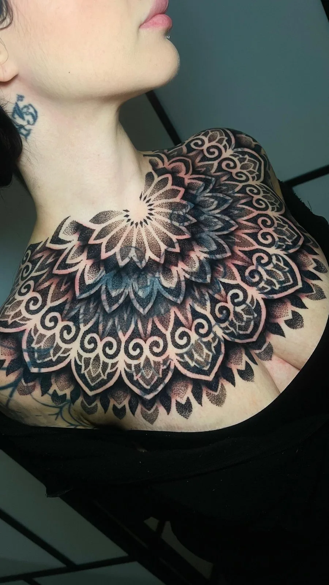
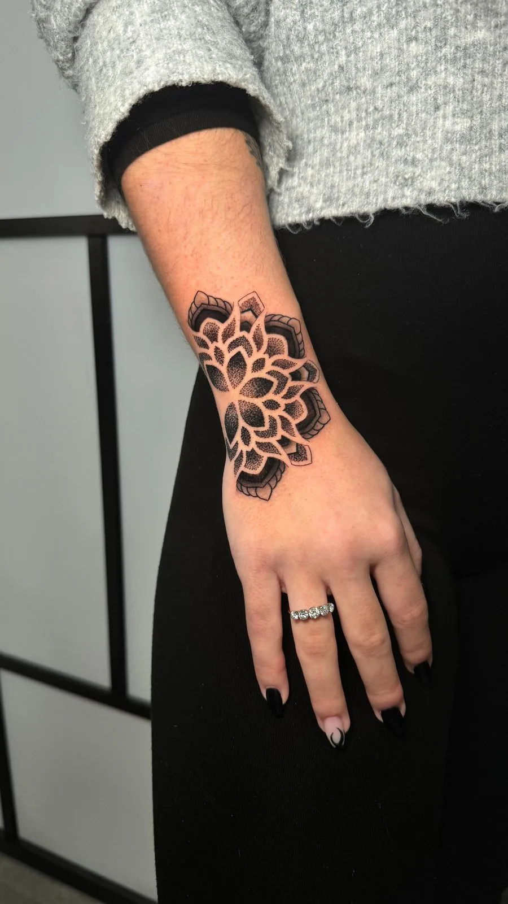

Portfolio
Selected Work
Sixteen years of needle, ink and trust. Filter by style, then scroll through the archive piece by piece.

Blackwork Geometric · Full back
Skull & Geometry
Memento mori in heavy blackwork, the skull held inside a lattice of hand-pulled geometry.

Geometric · Full leg sleeve
Chrysanthemum Leg Sleeve
Chrysanthemum blooms woven through dotwork mandalas from hip to ankle — soft petals meeting hard structure in one continuous read.

Dotwork Mandala · Chest
Sternum Mandala
A mandala opening across the chest and onto the shoulder — soft dotwork held symmetrical to the body's own centre line.

Ornamental · Ribs, hip & thigh
Leopard & Ornament
A leopard and wildflowers on the ribs giving way to ornamental blackwork over the hip and thigh — one whole side read as a single piece.

Geometric · Leg
Lion & Mandala
A realist lion held between dotwork mandalas down the shin — soft fur set against hard geometry.

Dotwork Mandala · Shoulder & back
Shoulder Mandala
One unbroken mandala flowing over the shoulder blade and onto the arm — dotwork shading weighted to move with the shoulder, not against it.

Mandala · Half sleeve
Mehndi Half Sleeve
Henna-inspired ornament carried into permanence, flowing from elbow to shoulder in one continuous rhythm.

Dotwork · Calf
Owl Mandala
An owl dissolving into sacred geometry, stippled dot by dot so the gradients breathe across the calf.

Geometric Sleeve · Full arm
Stormtrooper Sleeve
A stormtrooper helmet crowned with mandala work and carried down the arm in bold blackwork panels — pop culture held inside sacred geometry.

Blackwork · Elbow & forearm
Elbow Mandala
Solid blackwork ornament tapering from the elbow down the forearm — heavy ink and negative space doing all the talking.

Geometric · Forearm
Serpent & Geometry
A serpent coiling down the forearm, its skin patterned with honeycomb and starburst geometry — movement drawn in still shapes.

Dotwork Mandala · Wrist
Wrist Mandala
A dotwork mandala closing over the wrist and onto the back of the hand — jewellery you never take off.

Dotwork · Throat
Throat Mandala
A dotwork mandala set square at the front of the throat — a bold placement carried by clean symmetry.

Geometric · Thigh
Honeycomb Thigh
An open honeycomb running down the thigh with a few cells already filled — a portrait, a mandala burst, a panther — and room left to grow.

Ornamental · Arm
Suminagashi Flow
Inspired by Japanese paper-marbling — ink set in motion down the arm and frozen mid-current.
Blackwork · Back, in progress
In the Chair
A back piece mid-session — the part most people never see, where line and patience do the quiet work.